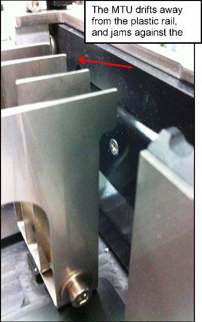
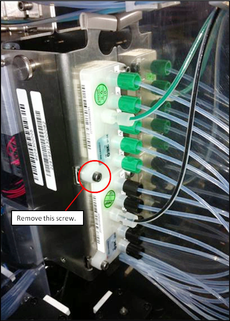
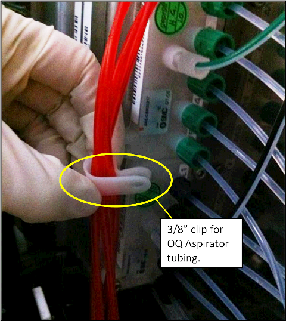
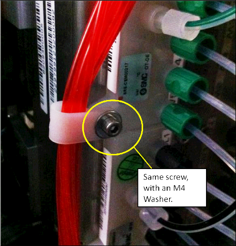
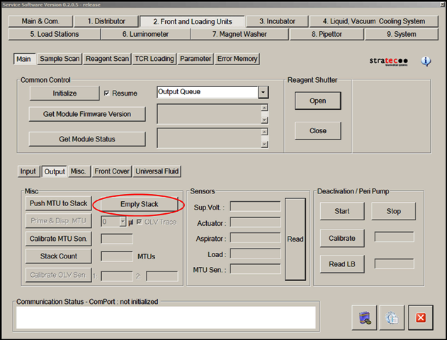
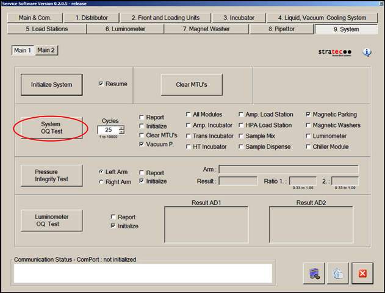

Output Queue Cover Installation
Purpose
This procedure describes how to replace the current Output Queue (OQ) cover with an upgraded Output Queue Guided Cover.
Background Information
 Output Queue jams occur at the handoff position because the MTU
Output Queue jams occur at the handoff position because the MTU Multi-tube unit—Container used to process tests in the instrument. An MTU contains five separate reaction tubes. The MTU is moved through the instrument by the linear distributor and includes five tiplets for pipettiing to be used in the mag wash station. drifts away from the black plastic rail toward the metal rails and snags on the sharp edge of the metal rails.
Multi-tube unit—Container used to process tests in the instrument. An MTU contains five separate reaction tubes. The MTU is moved through the instrument by the linear distributor and includes five tiplets for pipettiing to be used in the mag wash station. drifts away from the black plastic rail toward the metal rails and snags on the sharp edge of the metal rails.

This procedure describes how to replace the current OQ Cover with a new OQ Guided Cover that has an integrated guide flap. This MTU flap guides the MTU to the QO handoff position, and prevents jams against the metal rails.
Parts and Materials Required
- Allen wrenches
- Absorbent pad
- Output Queue Guided Cover
- M4 washer (from Trunk Stock)
- 3/8"–3/4" tubing clip (from Trunk Stock)
Time Required
- 20 minutes to perform the hardware modification
- 30 minutes to perform the verification
Procedure
|
|
Warning—This procedure includes handling of the Panther System waste disposal system. Use extreme care: Frequently change gloves and follow clean to dirty workflow procedures to avoid contamination. |
- Put on proper PPE.
- Remove the current OQ Cover.
- Install the OQ Guided Cover on the OQ.
- The red aspirator tubing needs to be re-routed so that it will not interfere with the Guide Flap.
- Place an absorbent pad under the vacuum manifold.
- Disengage the red tubing from the current routing clip, and unplug the tubing from the vacuum manifold.
 Using a 3 mm Allen wrench, remove the left screw from the wash buffer dispense manifold. Save the screw for later use.
Using a 3 mm Allen wrench, remove the left screw from the wash buffer dispense manifold. Save the screw for later use.
- Route the aspirator tubing through the 3/8"–3/4" tubing clip. Use the screw removed in step 4c, along with an M4 washer to attach the clip to the wash dispense manifold.


- Ensure the OQ Aspirators have full range of motion by moving the aspirator assembly up and down by hand.
Verification
- Cycle at least 25 MTUs through the Output Queue.
- Launch Service Software.
- Initialize the Output Queue, Distributor, and MTU Input Queue.
- On the Front Loading Units tab, select Output and then Empty Stack to ensure that the Output Queue stack is empty.

- In the System tab, perform a System OQ Test.
- Select 25 cycles.
- Clear the Initialize box (all modules that will be used are already initialized).
- Clear the All Modules box and select Magnetic Parking.
- Select System OQ Test.
- When prompted, completely fill the MTU Input Queue with 25 MTUs.

- Ensure that the Output Queue and system function properly during the System OQ Test.
 button at the top of the page to send feedback, comments, or change requests.
button at the top of the page to send feedback, comments, or change requests.